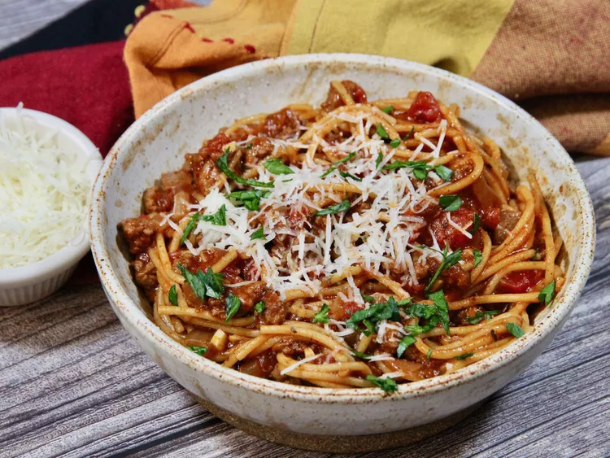

<!DOCTYPE html>
<html lang="en">
</html>
<head>
    <link rel="stylesheet" href="../style.css">
    <meta charset="UTF-8">
    <title>Spaghetti</title>
    <body>
        <h1 id="S_header">Spaghetti</h1>
        <a href="../index.html"><h3>Home</h3></a>
     
        <strong><h2>Description</h2></strong>
    <p1>Hearty, flavorful, and fuss-free, this One-Pot Spaghetti brings ground beef, tomatoes, and spices together in <br>
        a single pot for a comforting meal the whole family will love. With tender pasta that soaks up all the rich <br>
        flavors and minimal cleanup required, it’s the perfect go-to recipe for busy weeknights or big family gatherings.</p1>
    <table>
    <strong><h2>Ingredients</h2></strong></thead>
        <ul>
            <li>1 pound lean ground beef</li>
            <li>1 large onion, chopped</li>
            <li>2 cloves garlic, minced</li>
            <li>1 (14 ounce) can tomato sauce</li>
            <li>1 (14 ounce) can petite diced tomatoes</li>
            <li>2 cups water</li>
            <li>1 tablespoon chili powder</li>
            <li>1 teaspoon dried oregano</li>
            <li>1 teaspoon ground black pepper</li>
            <li>7 ounces whole wheat spaghetti</li>
            <li>¼ cup grated Parmesan cheese, or to taste (Optional)</li>
        </ul>
<strong><h2>Steps</h2></strong>
        <ol>
            <li>Heat a Dutch oven over medium-high heat. Cook and stir ground beef, onion, <br>
                and garlic until beef is browned and crumbly and onion is translucent, 5 to 7 <br>
                minutes. Drain and discard excess grease.</li>
            <li>Stir in tomato sauce, diced tomatoes, water, chili powder, oregano, and black <br>
                pepper. Bring to a boil. Cover, reduce heat, and let simmer, stirring often, for <br>
                about 30 minutes.</li>
            <li>Break spaghetti into thirds and add to the pot; cover and simmer, stirring often, <br>
                until pasta is tender, about 20 minutes. Serve topped with Parmesan cheese.</li>            
        </ol>
    </body>
</head>